The refund figures in my excursions project are going out to guests tomorrow, so the script has to actually run and its output file must show every booking's refund at the right rate, cheapest refund first.
{
"config": [
{
"type": "execute",
"parameters": {
"command": "python3 -c \"import os;d='/home/user/travel/excursions';os.makedirs(d,exist_ok=True);open(d+'/bookings.csv','w').write('ref,guest,paid,days_before\\nEX1041,Marta Ferreira,480,14\\nEX1042,Colin Deane,220,3\\nEX1043,Aisha Rahman,975,45\\nEX1044,Tomas Lindqvist,310,7\\nEX1045,Nadia Boucher,640,2\\nEX1046,Peter Ellery,150,30\\n');open(d+'/refunds.py','w').write('import csv\\n\\n# policy: 45+ days -> 100%, 8-44 days -> 50%, 7 or fewer -> 0%\\nrows = list(csv.DictReader(open(\\\"bookings.csv\\\")))\\nout = []\\nfor r in rows:\\n d = int(r[\\\"days_before\\\"])\\n if d >= 45:\\n rate = 1.0\\n elif d >= 8:\\n rate = 0.5\\n else:\\n rate = 0.5\\n out.append((r[\\\"ref\\\"], float(r[\\\"paid\\\"]) * rate)\\nwith open(\\\"refunds.txt\\\", \\\"w\\\") as f:\\n for ref, amt in out:\\n f.write(\\\"%s,%.2f\\\\n\\\" % (ref, amt))\\n')\"",
"shell": true
}
}
],
"evaluator": {
"func": "check_include_exclude",
"result": {
"type": "vm_command_line",
"command": [
"python3",
"-c",
"import sys, traceback\ndef _main():\n import os, subprocess, sys\n d = '/home/user/travel/excursions'\n probs = []\n src = os.path.join(d, 'refunds.py')\n r = subprocess.run(['python3', 'refunds.py'], cwd=d, capture_output=True, text=True)\n if r.returncode != 0:\n probs.append('script still fails: ' + r.stderr.strip()[-200:])\n out = os.path.join(d, 'refunds.txt')\n if not os.path.isfile(out):\n probs.append('refunds.txt missing')\n else:\n lines = [l.strip() for l in open(out) if l.strip()]\n got = []\n for l in lines:\n parts = l.replace('\\t', ',').split(',')\n if len(parts) < 2:\n probs.append('bad line: ' + l)\n break\n try:\n got.append((parts[0].strip().upper(), float(parts[-1])))\n except ValueError:\n probs.append('bad amount: ' + l)\n break\n want = {'EX1041': 240.0, 'EX1042': 0.0, 'EX1043': 975.0, 'EX1044': 0.0, 'EX1045': 0.0, 'EX1046': 75.0}\n if len(got) != 6:\n probs.append('expected 6 rows, got %d' % len(got))\n else:\n for ref, amt in got:\n if ref not in want:\n probs.append('unknown ref ' + ref)\n elif abs(amt - want[ref]) > 0.01:\n probs.append('%s refund %.2f, expected %.2f' % (ref, amt, want[ref]))\n amounts = [a for _, a in got]\n if amounts != sorted(amounts):\n probs.append('rows not ordered cheapest refund first')\n for p in probs:\n print(p, file=sys.stderr)\n print('FAIL' if probs else 'PASS')\n\ntry:\n _main()\nexcept Exception:\n traceback.print_exc(file=sys.stderr)\n print(\"FAIL\")\n"
]
},
"expected": {
"type": "rule",
"rules": {
"include": [
"PASS"
],
"exclude": [
"FAIL"
]
}
}
}
}
step 1 11:19:59
THINKINGI need to understand the task first. The user mentions an "excursions project" with a script that calculates refund figures, and its output file must show every booking's refund at the right rate, cheapest refund first. I need to find this project on the system. Let me start by taking a screenshot to see the current state, then explore the file system.
Let me open a terminal to explore. I'll look for the project first. I should open a file manager or terminal. Let me take a screenshot first to see the desktop, then find a terminal application.
ACTIONI'll start by exploring the system to find your excursions project. Let me open a terminal.
EXECUTED (pyautogui in VM)pyautogui.press("command")
step 2 11:20:08
THINKINGThe super key didn't open anything visible. I need a terminal to explore the file system. Let me look for a terminal. I could use the Files app or find a terminal. Let me try opening a terminal via the Activities app grid (the dots at bottom left) or try a keyboard shortcut.
A reliable way to open a terminal on Ubuntu is to search for it. Let me click the Activities/grid button at bottom left, or I can try launching xterm. Actually, I don't have direct bash tool access here - I only have the computer (GUI) tool. So I need to open a terminal application via GUI.
Let me click the grid of dots at bottom left to open the app list and search for terminal.
ACTIONLet me open the applications grid to find a terminal.
THINKINGThe terminal is open. Let me search for the excursions project. I'll look in the home directory and common locations. Let me list files and search for directories/files related to "excursions". I'll maximize the terminal first for better visibility, then run a find command.
Let me run a find command to locate the project.
ACTIONTerminal is open. Let me search for the excursions project.
EXECUTED (pyautogui in VM)pyautogui.click(599, 299)
step 6 11:21:00
THINKINGLet me search for the excursions project. I'll run a find command to locate directories or files with "excursion" in the name within the home directory.
EXECUTED (pyautogui in VM)pyautogui.press("return")
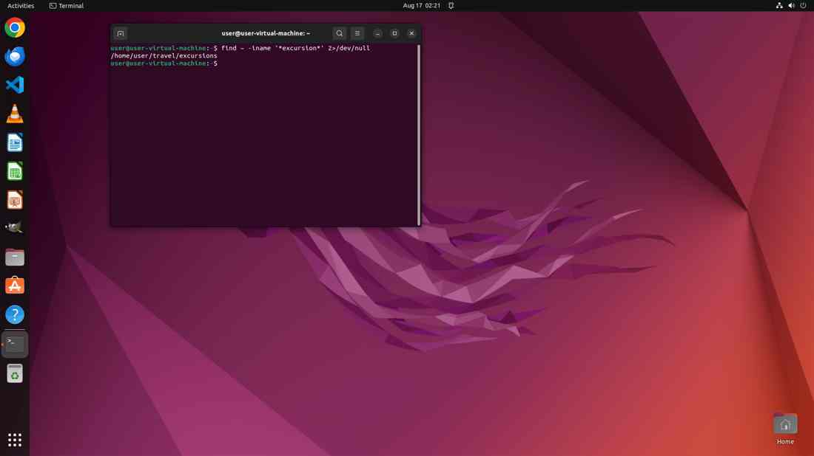
step 8 11:21:24
THINKINGFound it: /home/user/travel/excursions. Let me explore this directory to understand its structure - what scripts and data files are in there.
ACTIONFound the project at `/home/user/travel/excursions`. Let me explore its contents.
TOOL CALL<tool_call>
<function=computer_use>
<parameter=action>
type
</parameter>
<parameter=text>
cd /home/user/travel/excursions && ls -la
</parameter>
</function>
</tool_call>
EXECUTED (pyautogui in VM)pyautogui.typewrite("cd /home/user/travel/excursions && ls -la")
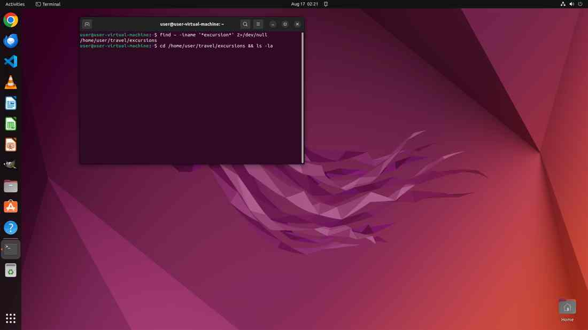
step 9 11:21:34
THINKINGThe command was typed but I need to press Enter. Actually the newline in my type should have executed it, but the screenshot shows it hasn't run yet. Let me press Enter.
EXECUTED (pyautogui in VM)pyautogui.press("return")
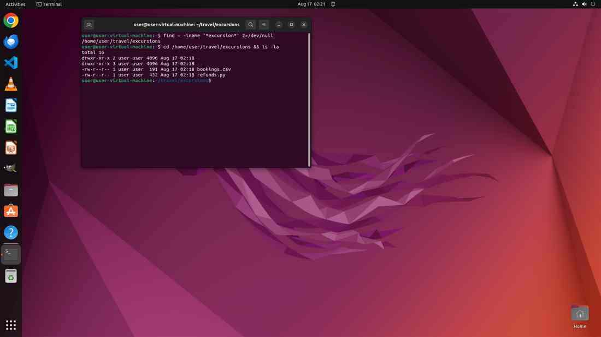
step 10 11:21:45
THINKINGThere are two files: bookings.csv and refunds.py. Let me examine both. I'll cat both files to understand the data and the script's logic. Let me maximize the terminal first for better readability, then view the files. Actually the files are small (191 and 432 bytes), so I can view them directly. Let me cat refunds.py first.
ACTIONTwo files: `bookings.csv` and `refunds.py`. Let me view the script first.
TOOL CALL<tool_call>
<function=computer_use>
<parameter=action>
type
</parameter>
<parameter=text>
cat -A refunds.py
</parameter>
</function>
</tool_call>
EXECUTED (pyautogui in VM)pyautogui.typewrite("cat -A refunds.py")
step 11 11:21:55
THINKINGThe command is typed but not executed. The trailing newline in my type doesn't seem to trigger execution in this terminal (it may have been consumed). Let me press Enter.
EXECUTED (pyautogui in VM)pyautogui.press("return")
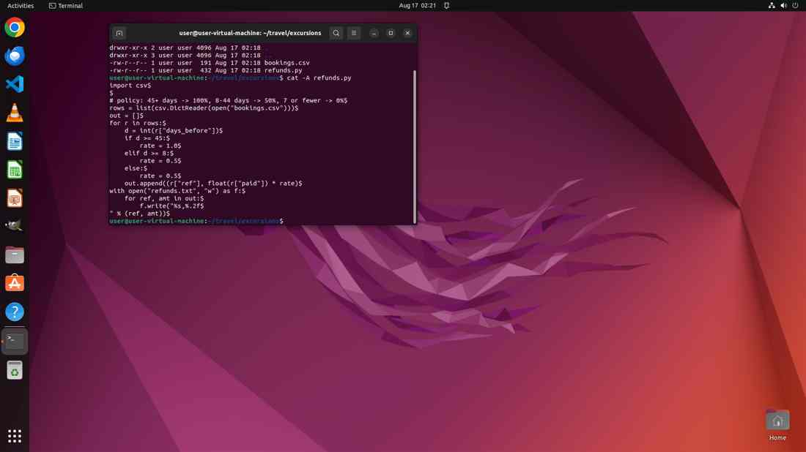
step 12 11:22:32
THINKINGNow I can read the script. Let me transcribe it:
```python
import csv
# policy: 45+ days -> 100%, 8-44 days -> 50%, 7 or fewer -> 0%
rows = list(csv.DictReader(open("bookings.csv")))
out = []
for r in rows:
d = int(r["days_before"])
if d >= 45:
rate = 1.0
elif d >= 8:
rate = 0.5
else:
rate = 0.5
out.append((r["ref"], float(r["paid"]) * rate))
with open("refunds.txt", "w") as f:
for ref, amt in out:
f.write("%s,%.2f$
" % (ref, amt))
```
The comment states the policy: 45+ days -> 100%, 8-44 days -> 50%, 7 or fewer -> 0%.
The script has bugs:
1. The `else` branch (d < 8, i.e., 7 or fewer) sets `rate = 0.5` but should be `0.0` per the policy comment. This is the "right rate" bug.
2. The output is not sorted. The user wants "cheapest refund first" - so it should sort by refund amount ascending. Currently it just writes in the original order.
3. The last line: `f.write("%s,%.2f$\n" % (ref, amt))` - the `$` and newline are on the next line. Actually looking at `cat -A`, the line shows `f.write("%s,%.2f$` then next line `" % (ref, amt))`. This is because the string literal contains a newline character before the closing quote. Wait, with cat -A, a `$` marks end of line. So `f.write("%s,%.2f$` means the line ends there with a `$` (end of line marker). Then next line `" % (ref, amt))`. So the string literal actually spans two lines? No - that would be a syntax error unless... Actually the string is `"%s,%.2f\n" % (ref, amt)` where the `\n`... no wait. Let me reconsider.
With `cat -A`, each line ends with `$`. So:
- Line: ` f.write("%s,%.2f$` — this `$` is the end-of-line marker, meaning the actual line content is ` f.write("%s,%.2f`. There's no visible `\n` or escape.
- Next line: `" % (ref, amt))$` — content is `" % (ref, amt))`.
So the Python source actually has the string split across two physical lines:
```
f.write("%s,%.2f
" % (ref, amt))
```
This is a raw newline inside a string literal, which in Python is allowed (a string can contain a literal newline). So the format string is `"%s,%.2f\n"` effectively (a literal newline between `.2f` and the closing quote). Wait no — the string is `"%s,%.2f` + newline + `"`. So the literal newline is INSIDE the string. So the output would be `REF,123.45\n` — actually the newline is the last char of the string before the closing quote. So it writes `ref,amount` followed by a newline. That's actually correct for producing one line per record!
Wait, let me re-read. The string is: `"%s,%.2f` then a literal newline then `"`. So the format string equals `"%s,%.2f\n"` (where \n is a real newline). So `f.write("%s,%.2f\n" % (ref, amt))` → writes `ref,amount\n`. That's fine actually. So the write produces proper lines.
Hmm, but is that a bug? It works but is ugly (raw newline in string). It's not a functional bug. The main functional bugs are:
1. `else` rate should be 0.0, not 0.5.
2. Output not sorted cheapest-first.
The user says: "the script has to actually run and its output file must show every booking's refund at the right rate, cheapest refund first."
So requirements:
- Script must actually run (currently it may run fine, or there may be a runtime error - need to check).
- Output shows every booking's refund at the right rate (fix the else branch to 0.0).
- Sorted cheapest refund first.
Let me first look at the data in bookings.csv to understand columns and check the days_before values. Let me also verify the script runs. But before that, I should understand "right rate" — the policy comment is the authoritative spec: 45+ -> 100%, 8-44 -> 50%, 7 or fewer -> 0%. The bug is the else giving 0.5 instead of 0.0.
Let me view bookings.csv.
ACTIONI can now read the script. Key observations:
- Policy comment: `45+ days -> 100%, 8-44 days -> 50%, 7 or fewer -> 0%`
- Bug: the `else` branch (7 or fewer days) sets `rate = 0.5` instead of `0.0`
- Bug: output is not sorted (needs cheapest refund first)
Let me examine the data file.
TOOL CALL<tool_call>
<function=computer_use>
<parameter=action>
type
</parameter>
<parameter=text>
cat -A bookings.csv
</parameter>
</function>
</tool_call>
EXECUTED (pyautogui in VM)pyautogui.typewrite("cat -A bookings.csv")
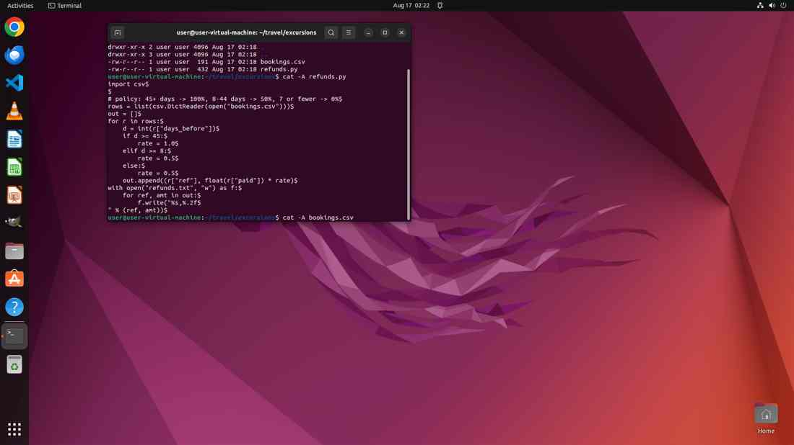
step 13 11:22:48
THINKINGI see the script more clearly now. Let me also re-examine the write line. The last two lines:
```
f.write("%s,%.2f$
" % (ref, amt))$
```
So the string literal is `"%s,%.2f` + newline + `"`. This is a valid Python string containing a literal newline. So it writes `ref,amount\n`. Actually wait - is the newline part of the string or is the string split? The `"` opens at `f.write("` and the closing `"` is at the start of the next line. So the string content is `%s,%.2f` + `<newline>`. So the full string is `"%s,%.2f\n"`. This produces `ref,amount\n` per line. That's actually fine for output.
Hmm, but wait, is it possible there's a subtle issue? The string is `"%s,%.2f\n"`. `%` formatting with two args ref, amt. Produces `ref,amount\n`. Written to file. So each record on its own line. Good.
Now I need to press Enter to run the cat bookings.csv command.
EXECUTED (pyautogui in VM)pyautogui.press("return")
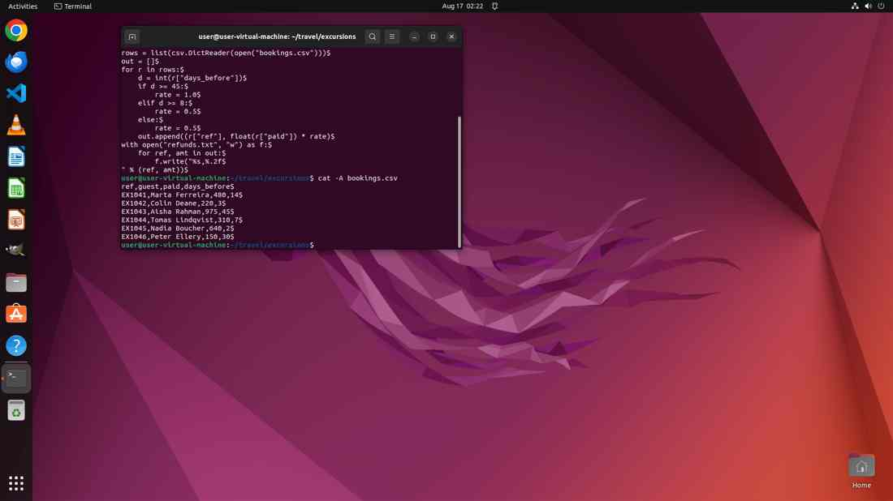
step 14 11:23:26
THINKINGNow I have the full picture. The CSV:
```
ref,guest,paid,days_before
EX1041,Marta Ferreira,480,14
EX1042,Colin Deane,220,3
EX1043,Aisha Rahman,975,45
EX1044,Tomas Lindqvist,310,7
EX1045,Nadia Boucher,640,2
EX1046,Peter Ellery,150,30
```
Now let me compute the correct refunds per the policy (45+ -> 100%, 8-44 -> 50%, 7 or fewer -> 0%):
- EX1041: paid 480, days 14 → 8-44 → 50% → 240.00
- EX1042: paid 220, days 3 → 7 or fewer → 0% → 0.00
- EX1043: paid 975, days 45 → 45+ → 100% → 975.00
- EX1044: paid 310, days 7 → 7 or fewer → 0% → 0.00
- EX1045: paid 640, days 2 → 7 or fewer → 0% → 0.00
- EX1046: paid 150, days 30 → 8-44 → 50% → 75.00
Now with the buggy script (else = 0.5 instead of 0.0):
- EX1041: 240.00
- EX1042: 110.00 (wrong, should be 0)
- EX1043: 975.00
- EX1044: 155.00 (wrong, should be 0)
- EX1045: 320.00 (wrong, should be 0)
- EX1046: 75.00
Sorted cheapest first (correct values):
- 0.00: EX1042, EX1044, EX1045 (three tied at 0)
- 75.00: EX1046
- 240.00: EX1041
- 975.00: EX1043
For ties at 0.00, the sort order among them is ambiguous. A stable sort by amount would keep original relative order: EX1042, EX1044, EX1045. That's the natural result of `sorted(out, key=lambda x: x[1])` which is stable.
Now I need to fix the script:
1. Change `else: rate = 0.5` to `else: rate = 0.0`
2. Add sorting: `out.sort(key=lambda x: x[1])` before writing (or sort within).
Also the user emphasized "the script has to actually run". Let me verify the script runs. The string with the literal newline — is it valid? Yes, a string literal can span... no wait, actually a regular single-quoted/double-quoted string CANNOT contain a raw unescaped newline in Python! That IS a syntax error!
Wait, let me reconsider. In Python, a string literal delimited by `"` cannot contain a raw newline unless it's a triple-quoted string or the newline is escaped. A raw newline inside a single/double-quoted string causes:
```
SyntaxError: EOL while scanning string literal
```
So the script as written:
```python
f.write("%s,%.2f
" % (ref, amt))
```
This is a string `"..."` that starts on one line and the closing quote is on the next line, with a raw newline inside. This is a **SyntaxError**. So the script currently does NOT run at all!
This is the "the script has to actually run" part. So I need to fix:
1. The multi-line string literal → make it a proper `"%s,%.2f\n"`.
2. The else rate → 0.0.
3. Add sorting.
Let me verify my understanding by running the script first to confirm the error. Let me run `python3 refunds.py` to see the error.
Actually, let me just run it to confirm the behavior before editing. This confirms "the script has to actually run".
ACTIONNow I have the complete picture. The CSV data is:
```
ref,guest,paid,days_before
EX1041, 480, 14 days
EX1042, 220, 3 days
EX1043, 975, 45 days
EX1044, 310, 7 days
EX1045, 640, 2 days
EX1046, 150, 30 days
```
The script has a third problem too: the `f.write` string literal spans two lines (a raw newline inside a `"..."` string), which is a `SyntaxError` in Python — so the script doesn't even run. Let me confirm by running it.
EXECUTED (pyautogui in VM)pyautogui.typewrite("python3 refunds.py; echo \"EXIT=$?\"")
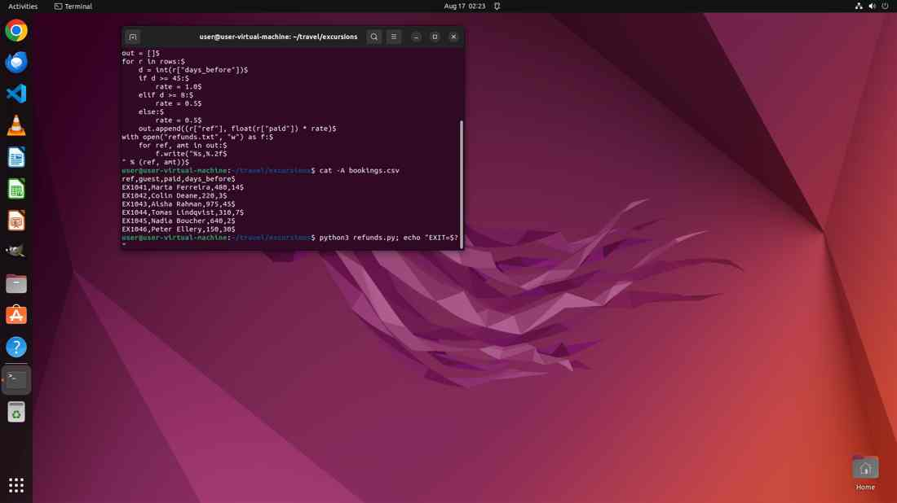
step 15 11:23:40
THINKINGInteresting — the python3 command seems to be hanging/waiting. The output shows a `"` on the last line, which suggests Python is in interactive/string continuation mode? No wait, this is running a file. Actually the terminal shows just `"` after the command. Hmm, that's odd. It looks like the command is still running or waiting.
Wait, actually looking carefully: the last line shows `"` with a cursor. This might be because the terminal is displaying the echoed multi-line thing. Let me press Enter to see the result, or wait. Actually the command may still be executing. Let me press Enter and take a screenshot.
Actually, I think what happened: my `type` included the command and a trailing newline, but the terminal is showing `"` — this could be a leftover. Let me just wait and screenshot.
EXECUTED (pyautogui in VM)pyautogui.press("return")
step 16.1 11:24:10
THINKINGConfirmed the diagnosis:
```
File "/home/user/travel/excursions/refunds.py", line 17
f.write("%s,%.2f
^
SyntaxError: unterminated string literal (detected at line 17)
EXIT=1
```
So the script fails to run due to the unterminated string literal. I need to rewrite the script to fix all three issues:
1. Unterminated string literal → `f.write("%s,%.2f\n" % (ref, amt))`
2. `else: rate = 0.5` → `else: rate = 0.0`
3. Sort output cheapest refund first → add `out.sort(key=lambda x: x[1])` before writing.
The cleanest and most reliable approach is to rewrite the entire file. I'll use a heredoc with `cat > refunds.py << 'EOF'` to write the corrected script. Using single-quoted EOF prevents variable expansion.
Let me write the corrected script:
```python
import csv
# policy: 45+ days -> 100%, 8-44 days -> 50%, 7 or fewer -> 0%
rows = list(csv.DictReader(open("bookings.csv")))
out = []
for r in rows:
d = int(r["days_before"])
if d >= 45:
rate = 1.0
elif d >= 8:
rate = 0.5
else:
rate = 0.0
out.append((r["ref"], float(r["paid"]) * rate))
out.sort(key=lambda x: x[1])
with open("refunds.txt", "w") as f:
for ref, amt in out:
f.write("%s,%.2f\n" % (ref, amt))
```
This is clean and correct. The sort is stable, so ties at 0.00 keep original order (EX1042, EX1044, EX1045).
I'll use a heredoc. One concern: typing multi-line into the terminal with the `type` action — newlines in the text will be sent as Return presses, which is fine for a heredoc. But the terminal is a GUI and I need to make sure indentation is preserved. The `type` action types literally including spaces, so indentation should be preserved. However, some terminals have auto-indent, but a raw terminal (GNOME Terminal / bash) does NOT auto-indent. So it should be fine.
Actually, a safer approach to avoid any indentation/auto-complete issues is to write the file using a Python one-liner or printf. But the heredoc is cleanest. Let me use the heredoc approach.
Actually, to be extra safe against any issues with the multi-line type and terminal behavior, I could write the file using a single printf command. But the string has newlines and special chars. A heredoc is the most readable.
Let me use `cat > refunds.py << 'PYEOF'` then the lines then `PYEOF`. I'll type it all in one type action with embedded newlines, then it should work. Let me do it.
Wait — there's a subtlety with the `type` action and how newlines are handled. When I include `\n` in the text, the tool types a Return for each. That's what I want for a heredoc. Let me construct the full command.
Let me type the heredoc command.
ACTIONConfirmed the diagnosis:
```
SyntaxError: unterminated string literal (detected at line 17)
EXIT=1
```
So the script fails to run at all. I now need to fix three things in the script:
1. The broken multi-line string literal → make it `"%s,%.2f\n"`.
2. The `else` rate `0.5` → `0.0` (per the policy: 7 or fewer days = 0%).
3. Add sorting so the output is cheapest refund first.
I'll rewrite the file cleanly using a heredoc.
TOOL CALL<tool_call>
<function=computer_use>
<parameter=action>
type
</parameter>
<parameter=text>
cat > refunds.py << 'PYEOF'
import csv
# policy: 45+ days -> 100%, 8-44 days -> 50%, 7 or fewer -> 0%
rows = list(csv.DictReader(open("bookings.csv")))
out = []
for r in rows:
d = int(r["days_before"])
if d >= 45:
rate = 1.0
elif d >= 8:
rate = 0.5
else:
rate = 0.0
out.append((r["ref"], float(r["paid"]) * rate))
out.sort(key=lambda x: x[1])
with open("refunds.txt", "w") as f:
for ref, amt in out:
f.write("%s,%.2f\n" % (ref, amt))
PYEOF
</parameter>
</function>
</tool_call>
EXECUTED (pyautogui in VM)pyautogui.typewrite("cat > refunds.py << 'PYEOF'")
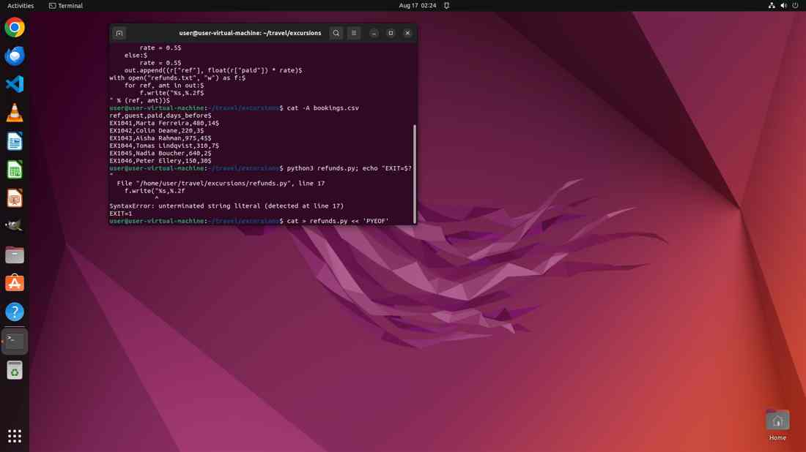
step 16.2 11:24:14
same model call as the previous action
EXECUTED (pyautogui in VM)pyautogui.press("enter")
step 16.3 11:24:18
same model call as the previous action
EXECUTED (pyautogui in VM)pyautogui.typewrite("import csv")
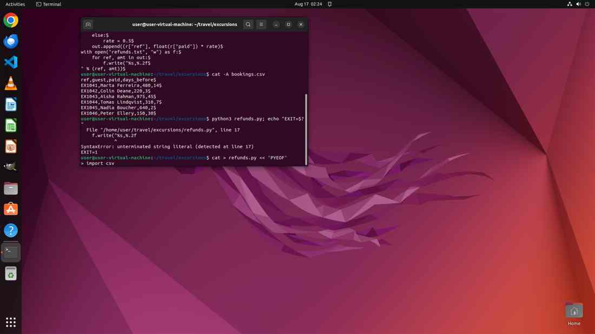
step 16.4 11:24:22
same model call as the previous action
EXECUTED (pyautogui in VM)pyautogui.press("enter")
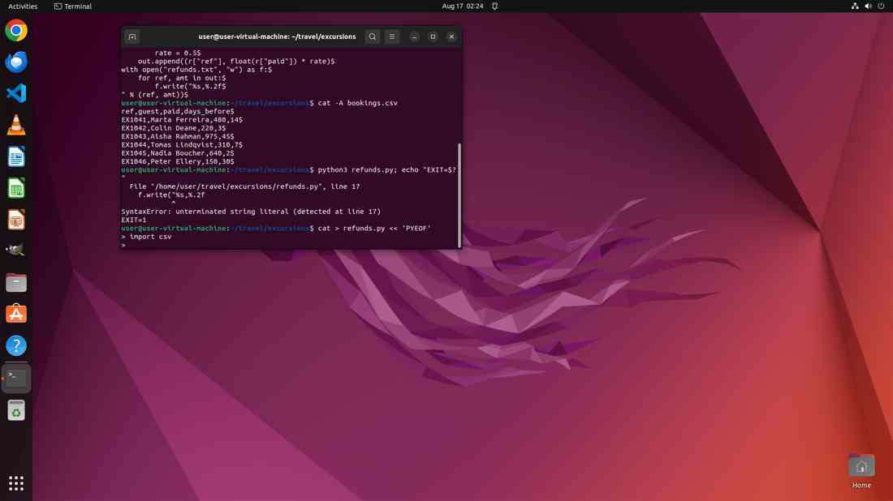
step 16.5 11:24:25
same model call as the previous action
EXECUTED (pyautogui in VM)pyautogui.typewrite("# policy: 45+ days -> 100%, 8-44 days -> 50%, 7 or fewer -> 0%")
step 16.6 11:24:29
same model call as the previous action
EXECUTED (pyautogui in VM)pyautogui.press("enter")
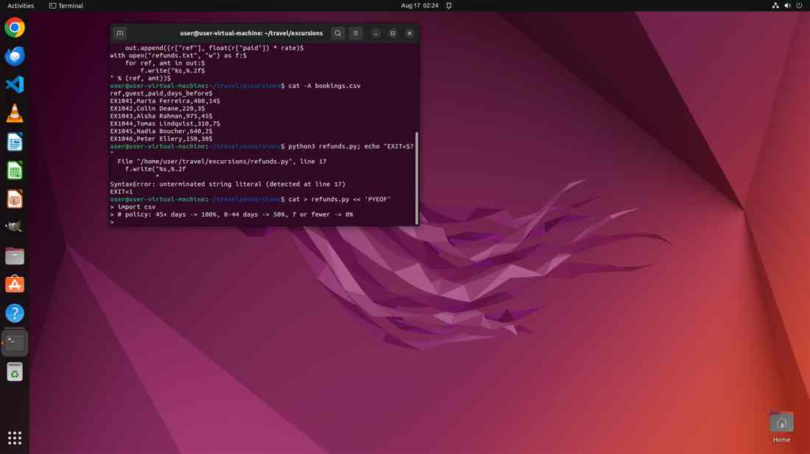
step 16.7 11:24:33
same model call as the previous action
EXECUTED (pyautogui in VM)pyautogui.typewrite("rows = list(csv.DictReader(open(\"bookings.csv\")))")
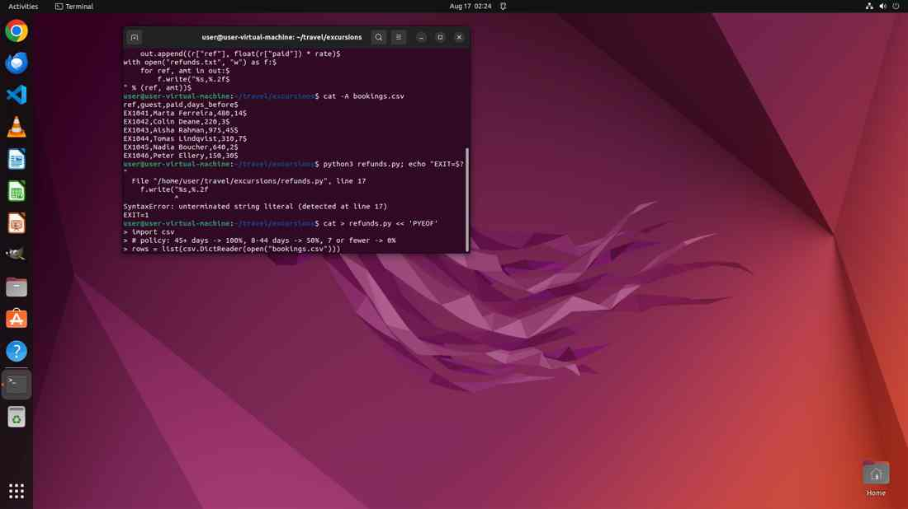
step 16.8 11:24:37
same model call as the previous action
EXECUTED (pyautogui in VM)pyautogui.press("enter")
step 16.9 11:24:41
same model call as the previous action
EXECUTED (pyautogui in VM)pyautogui.typewrite("out = []")
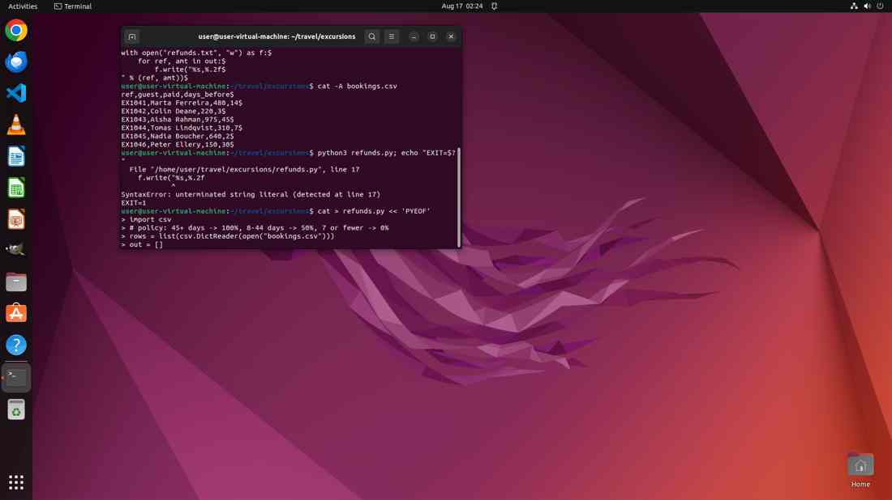
step 16.10 11:24:45
same model call as the previous action
EXECUTED (pyautogui in VM)pyautogui.press("enter")
step 16.11 11:24:49
same model call as the previous action
EXECUTED (pyautogui in VM)pyautogui.typewrite("for r in rows:")
step 16.12 11:24:53
same model call as the previous action
EXECUTED (pyautogui in VM)pyautogui.press("enter")
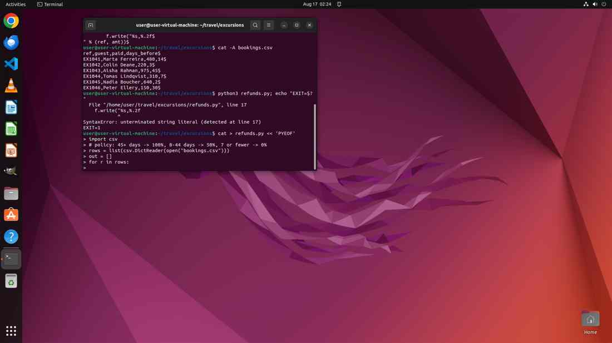
step 16.13 11:24:56
same model call as the previous action
EXECUTED (pyautogui in VM)pyautogui.typewrite(" d = int(r[\"days_before\"])")
step 16.14 11:25:00
same model call as the previous action
EXECUTED (pyautogui in VM)pyautogui.press("enter")
step 16.15 11:25:04
same model call as the previous action
EXECUTED (pyautogui in VM)pyautogui.typewrite(" if d >= 45:")
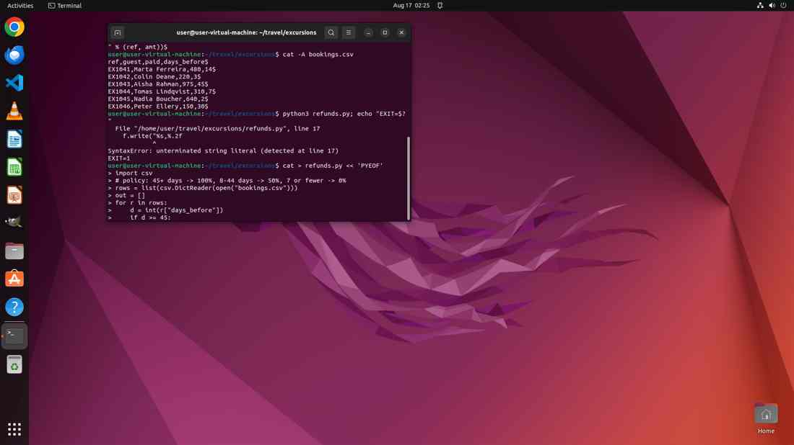
step 16.16 11:25:08
same model call as the previous action
EXECUTED (pyautogui in VM)pyautogui.press("enter")
step 16.17 11:25:12
same model call as the previous action
EXECUTED (pyautogui in VM)pyautogui.typewrite(" rate = 1.0")
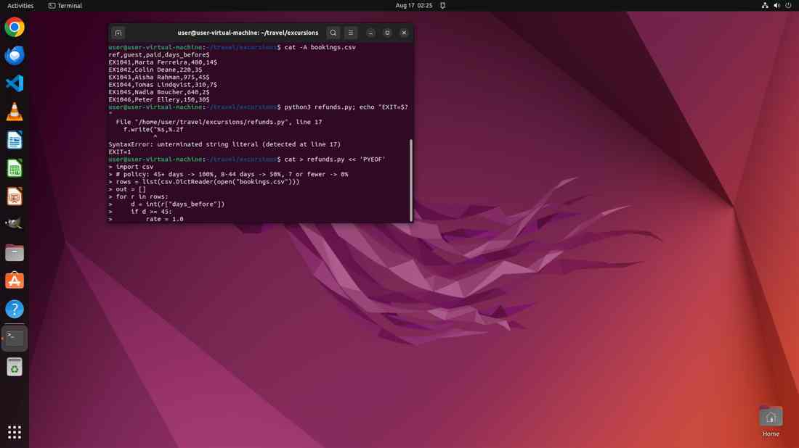
step 16.18 11:25:16
same model call as the previous action
EXECUTED (pyautogui in VM)pyautogui.press("enter")
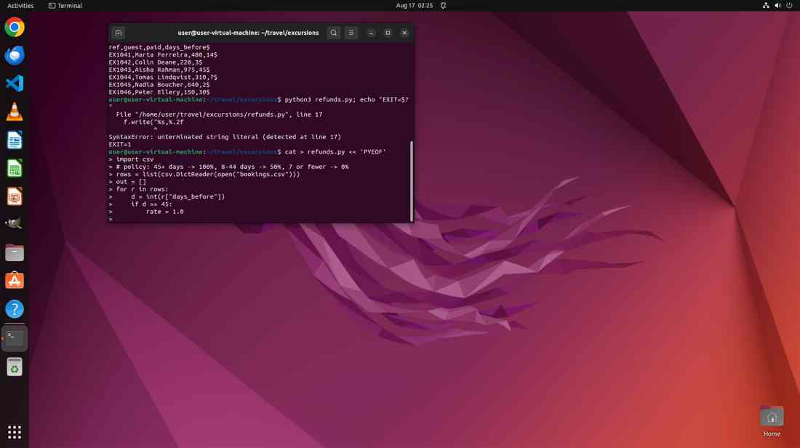
step 16.19 11:25:20
same model call as the previous action
EXECUTED (pyautogui in VM)pyautogui.typewrite(" elif d >= 8:")
step 16.20 11:25:23
same model call as the previous action
EXECUTED (pyautogui in VM)pyautogui.press("enter")
step 16.21 11:25:27
same model call as the previous action
EXECUTED (pyautogui in VM)pyautogui.typewrite(" rate = 0.5")
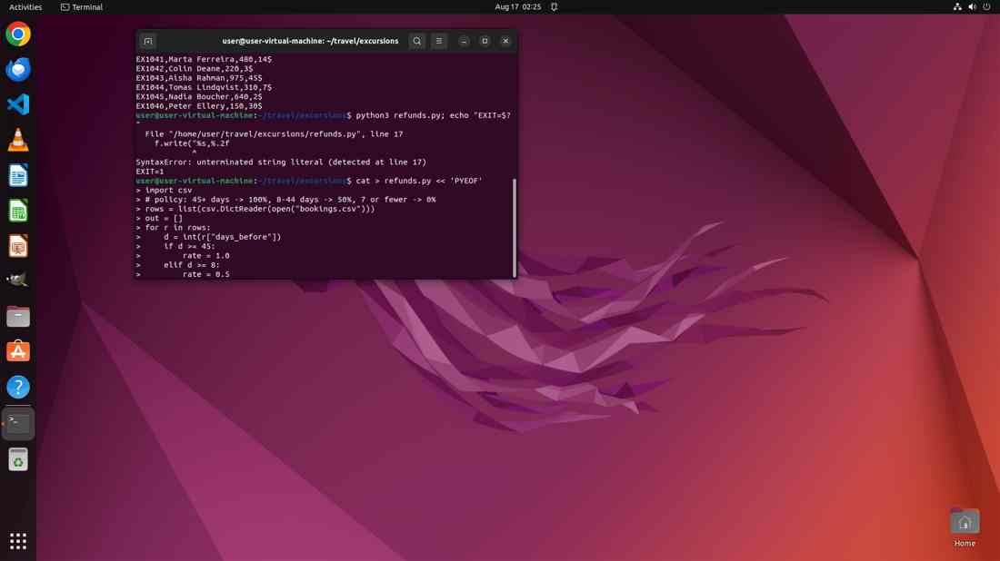
step 16.22 11:25:31
same model call as the previous action
EXECUTED (pyautogui in VM)pyautogui.press("enter")
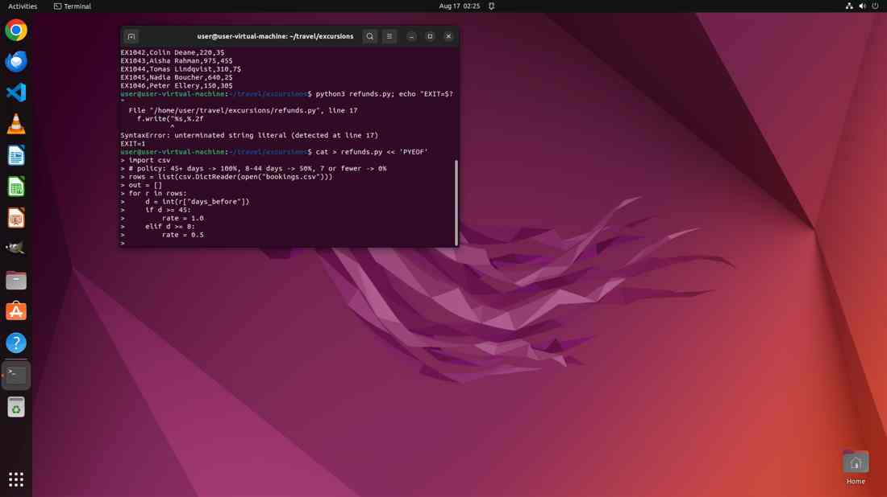
step 16.23 11:25:35
same model call as the previous action
EXECUTED (pyautogui in VM)pyautogui.typewrite(" else:")
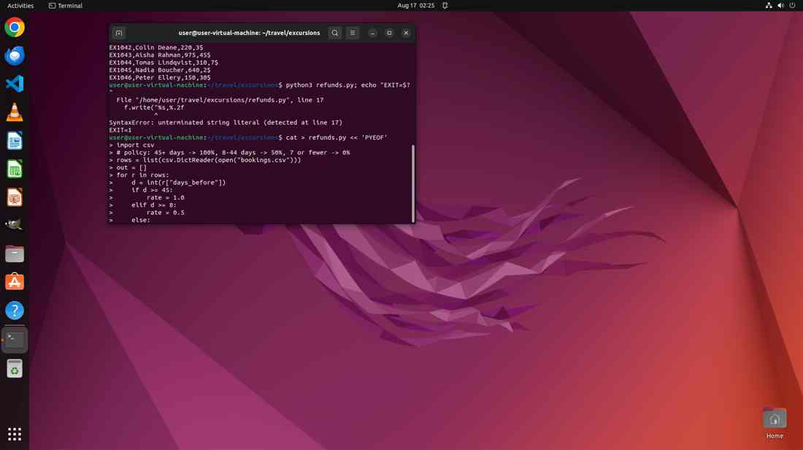
step 16.24 11:25:39
same model call as the previous action
EXECUTED (pyautogui in VM)pyautogui.press("enter")
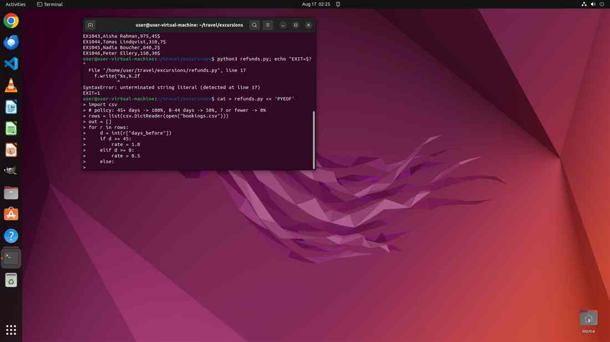
step 16.25 11:25:42
same model call as the previous action
EXECUTED (pyautogui in VM)pyautogui.typewrite(" rate = 0.0")
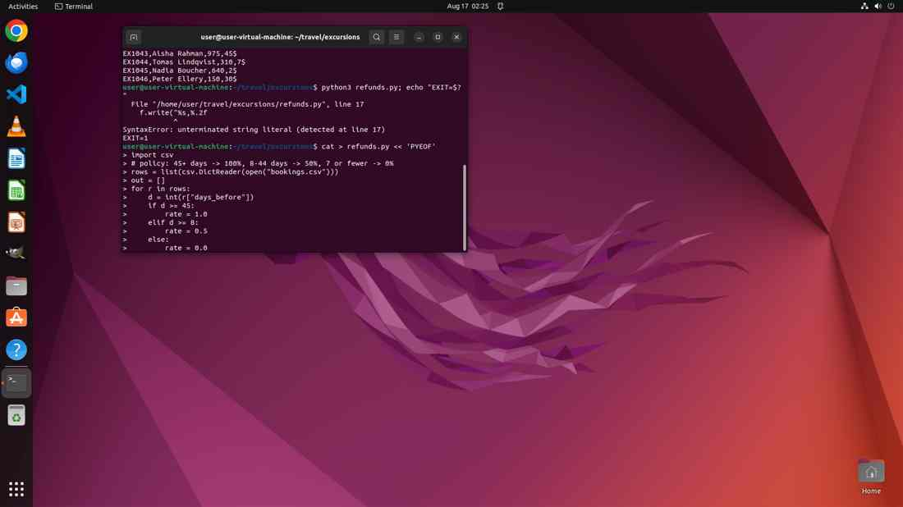
step 16.26 11:25:46
same model call as the previous action
EXECUTED (pyautogui in VM)pyautogui.press("enter")
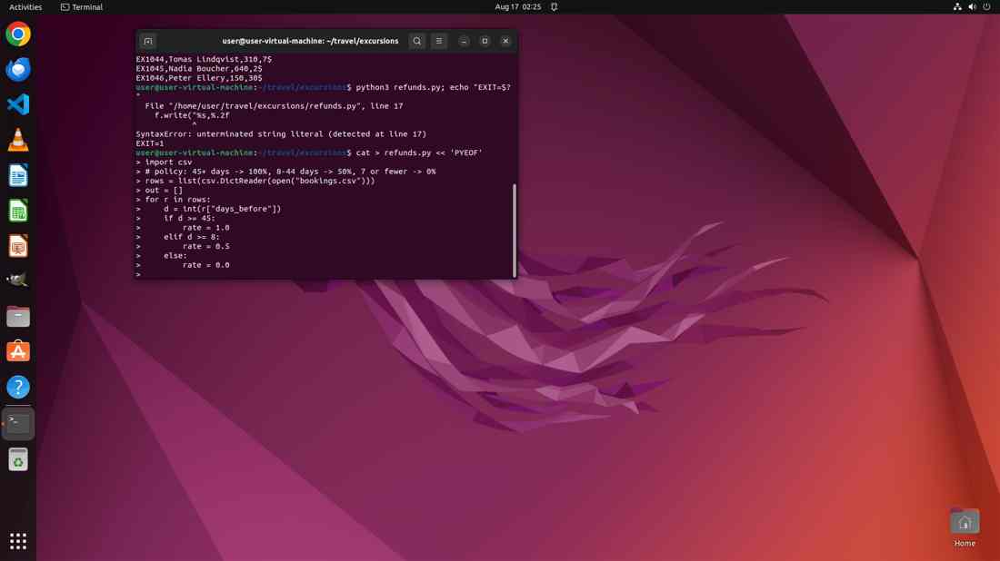
step 16.27 11:25:50
same model call as the previous action
EXECUTED (pyautogui in VM)pyautogui.typewrite(" out.append((r[\"ref\"], float(r[\"paid\"]) * rate))")
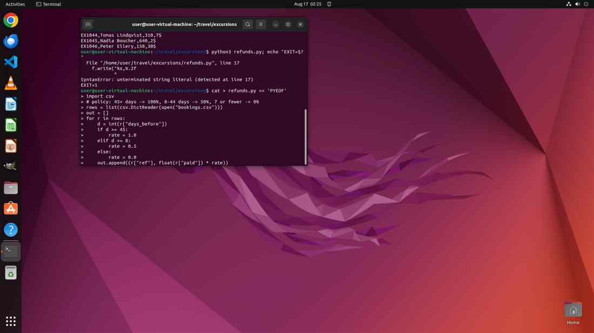
step 16.28 11:25:54
same model call as the previous action
EXECUTED (pyautogui in VM)pyautogui.press("enter")
step 16.29 11:25:57
same model call as the previous action
EXECUTED (pyautogui in VM)pyautogui.typewrite("out.sort(key=lambda x: x[1])")
step 16.30 11:26:01
same model call as the previous action
EXECUTED (pyautogui in VM)pyautogui.press("enter")
step 16.31 11:26:05
same model call as the previous action
EXECUTED (pyautogui in VM)pyautogui.typewrite("with open(\"refunds.txt\", \"w\") as f:")
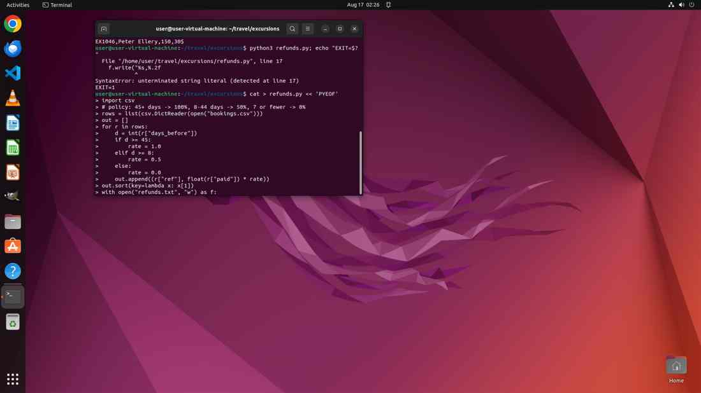
step 16.32 11:26:08
same model call as the previous action
EXECUTED (pyautogui in VM)pyautogui.press("enter")
step 16.33 11:26:12
same model call as the previous action
EXECUTED (pyautogui in VM)pyautogui.typewrite(" for ref, amt in out:")
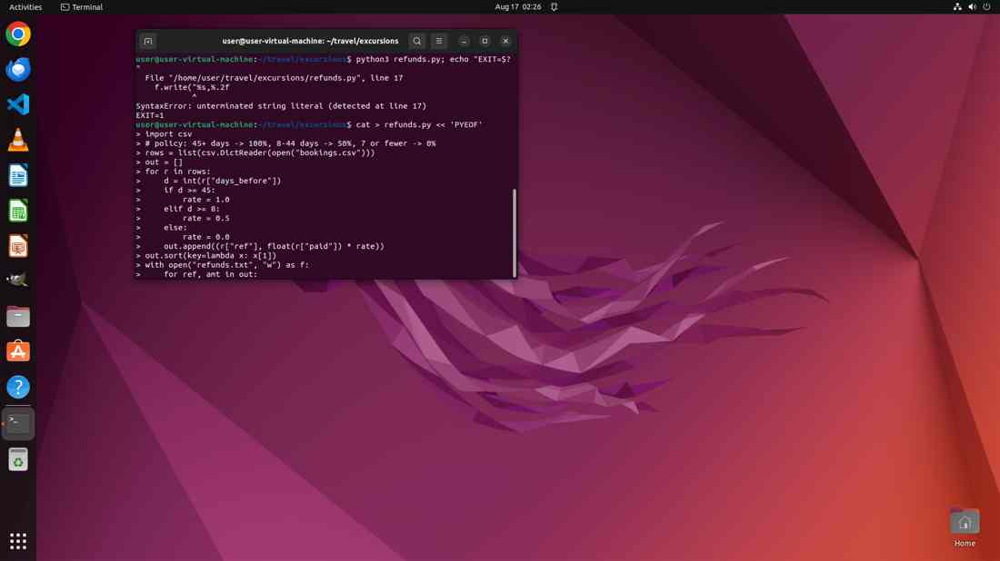
step 16.34 11:26:16
same model call as the previous action
EXECUTED (pyautogui in VM)pyautogui.press("enter")
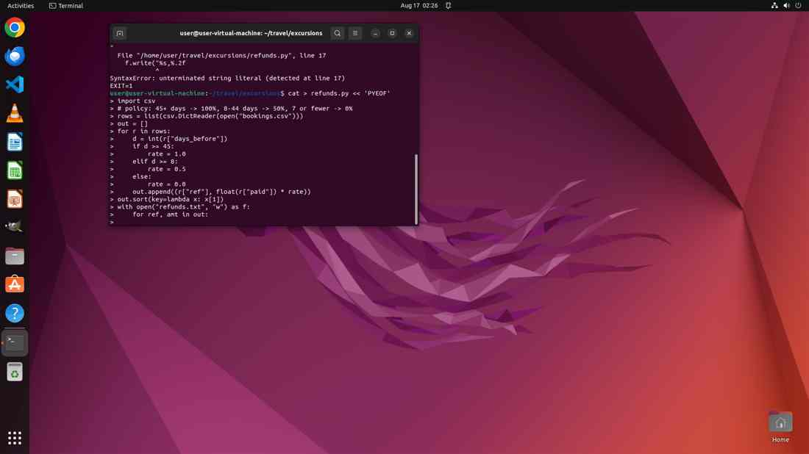
step 16.35 11:26:20
same model call as the previous action
EXECUTED (pyautogui in VM)pyautogui.typewrite(" f.write(\"%s,%.2f\\n\" % (ref, amt))")
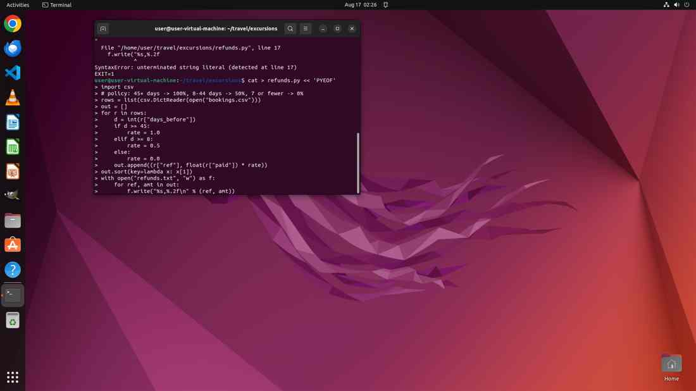
step 16.36 11:26:23
same model call as the previous action
EXECUTED (pyautogui in VM)pyautogui.press("enter")
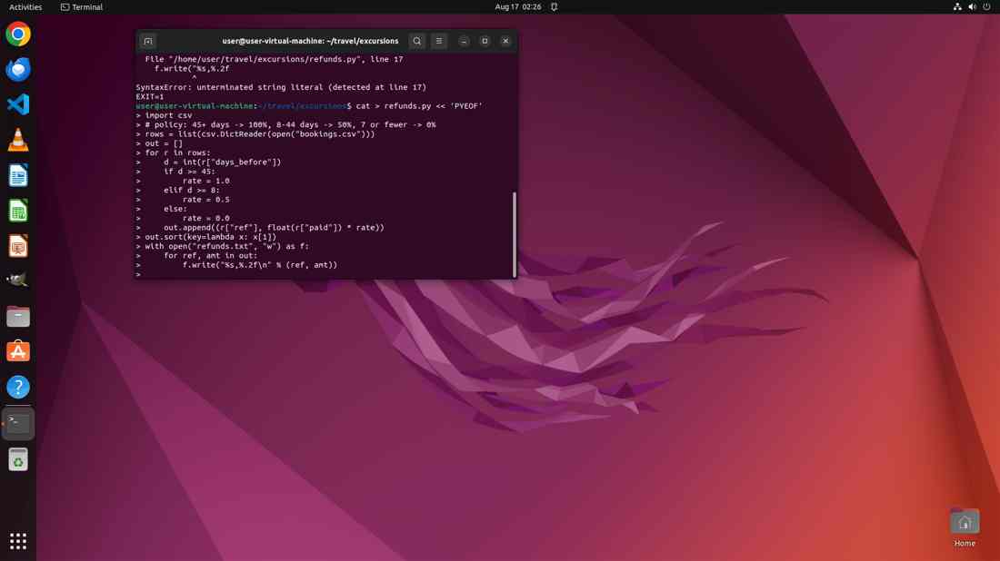
step 16.37 11:26:27
same model call as the previous action
EXECUTED (pyautogui in VM)pyautogui.typewrite("PYEOF")
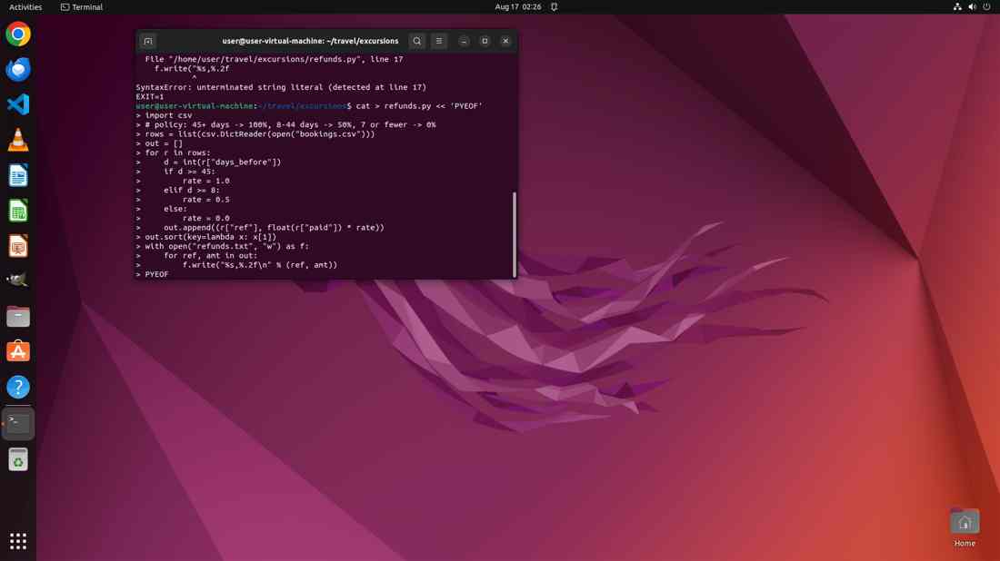
step 17 11:26:41
THINKINGThe heredoc content was typed correctly. The indentation looks preserved. The `PYEOF` terminator is at the end. I need to press Enter to finish the heredoc and write the file. Let me press Enter, then verify with cat -A and run the script.
ACTIONThe heredoc was entered with correct indentation. Let me close it and verify the file.
EXECUTED (pyautogui in VM)pyautogui.press("return")
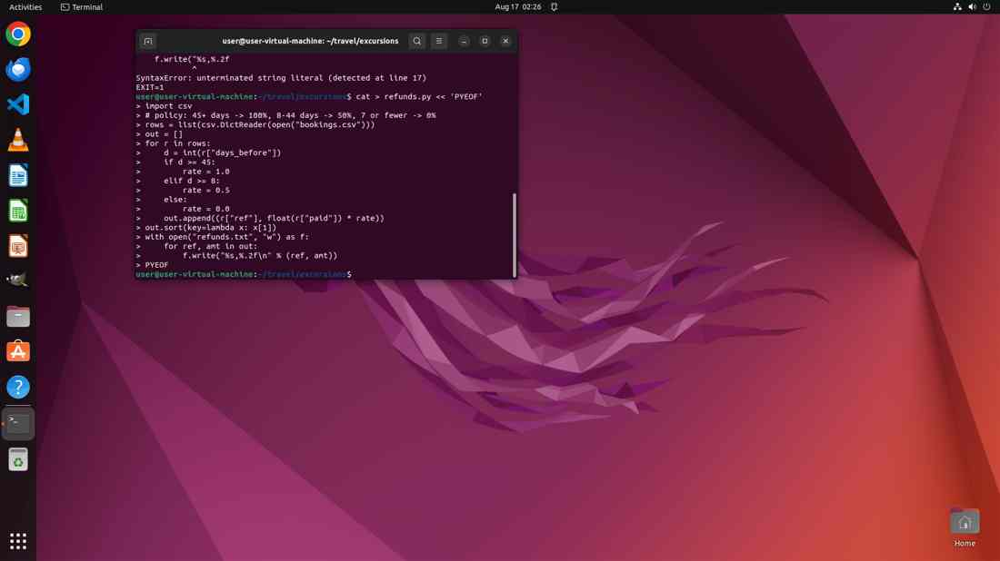
step 18 11:26:56
THINKINGThe file was written (prompt returned). Now let me verify the file content and run the script, then check the output. Let me run all three: cat the file, run it, and cat the output. I'll chain them.
ACTIONThe file was written and the prompt returned. Now let me verify the file, run the script, and inspect the output in one go.
EXECUTED (pyautogui in VM)pyautogui.press("return")
step 20 11:27:39
THINKINGThe script now runs successfully (EXIT=0) and produces the output file:
```
--- refunds.txt ---
EX1042,0.00
EX1044,0.00
EX1045,0.00
EX1046,75.00
EX1041,240.00
EX1043,975.00
```
Let me verify this is correct against my hand calculations:
- EX1042: 220, 3 days → 0% → 0.00 ✓
- EX1044: 310, 7 days → 0% → 0.00 ✓
- EX1045: 640, 2 days → 0% → 0.00 ✓
- EX1046: 150, 30 days → 50% → 75.00 ✓
- EX1041: 480, 14 days → 50% → 240.00 ✓
- EX1043: 975, 45 days → 100% → 975.00 ✓
All six bookings present, correct rates applied, and sorted ascending by refund amount (0.00, 0.00, 0.00, 75.00, 240.00, 975.00) — cheapest refund first. The three 0.00 ties are in original order (EX1042, EX1044, EX1045), which is the stable result.
Everything checks out:
- The script actually runs (EXIT=0).
- Every booking's refund is shown at the right rate.
- Sorted cheapest refund first.
The task is complete. I'll report the results. No further action needed. I'll send the completion marker.
ACTIONThe script now runs successfully (`EXIT=0`) and produces a correct output file:
```
--- refunds.txt ---
EX1042,0.00
EX1044,0.00
EX1045,0.00
EX1046,75.00
EX1041,240.00
EX1043,975.00
```
All three problems are fixed and verified:
1. **Script now actually runs** — the original had an *unterminated string literal* (the `f.write` string was split across two lines), which raised a `SyntaxError` so it never executed. It now uses a proper `"%s,%.2f\n"` and exits cleanly (`EXIT=0`).
2. **Right rate on every booking** — the `else` branch wrongly paid 50% for cancellations of 7 days or fewer. Per the stated policy (45+ → 100%, 8–44 → 50%, ≤7 → 0%), it now uses `0.0`. Verified against the data:
- EX1042 (3d), EX1044 (7d), EX1045 (2d) → **0.00**
- EX1046 (30d) → 50% = **75.00**
- EX1041 (14d) → 50% = **240.00**
- EX1043 (45d) → 100% = **975.00**
3. **Cheapest refund first** — added `out.sort(key=lambda x: x[1])`, so the file is ordered ascending by refund amount (0.00 → 75.00 → 240.00 → 975.00).
All six bookings appear, at correct rates, cheapest first — ready to go out to your guests tomorrow.
TOOL CALL<tool_call>
<function=computer_use>
<parameter=action>
call_user
</parameter>
<parameter=text>
All six bookings appear, at correct rates, cheapest first — ready to go out to your guests tomorrow.
</parameter>
</function>
</tool_call>